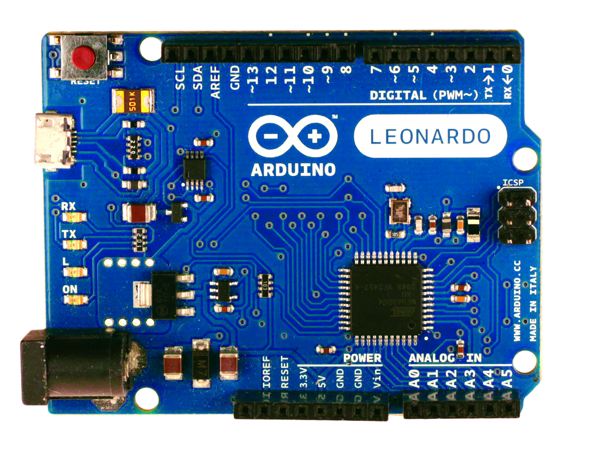
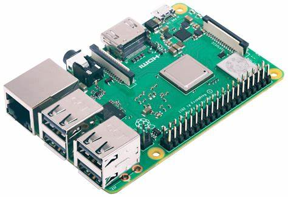

¡Descubre el mundo de la robótica ahora!
Plataformas y kits de robótica
Hay muchas opciones de plataformas y kits de robótica disponibles en el mercado. Algunos de los más populares incluyen:
- Arduino
- Raspberry Pi
- Lego Mindstorms
- RoboClaw
- Makeblock
- Robotis Bioloid
Arduino es una plataforma de hardware y software de código abierto que se utiliza para la creación de proyectos de robótica y electrónica. Con Arduino, los usuarios pueden crear dispositivos interactivos y proyectos que respondan al mundo físico. La plataforma está compuesta por una placa de circuito impreso con microcontrolador, un software de programación y una comunidad de usuarios y desarrolladores. Arduino se ha convertido en una herramienta popular en la educación y en la creación de prototipos para proyectos de robótica debido a su facilidad de uso y a su bajo costo. Los usuarios pueden escribir programas utilizando el lenguaje de programación C++ y cargarlos en la placa de Arduino para controlar los componentes electrónicos y motores. Existen una gran variedad de kits y accesorios disponibles para Arduino, lo que permite a los usuarios personalizar sus proyectos de robótica según sus necesidades. Además, la comunidad de usuarios y desarrolladores de Arduino es muy activa y colaborativa, lo que permite a los usuarios encontrar apoyo y soluciones a problemas comunes.
Raspberry Pi es un ordenador de placa única (SBC, por sus siglas en inglés) del tamaño de una tarjeta de crédito, diseñado para promover la enseñanza de ciencias de la computación en las escuelas y para la creación de proyectos DIY (hazlo tú mismo) de hardware y software. La Raspberry Pi utiliza un procesador ARM y cuenta con entradas y salidas de propósito general (GPIO, por sus siglas en inglés) para interactuar con sensores, actuadores y otros componentes electrónicos. La Raspberry Pi es conocida por su bajo costo, su flexibilidad y su gran comunidad de desarrolladores y aficionados que comparten ideas y proyectos.
Mindstorms LEGO es una plataforma de robótica educativa diseñada para enseñar a niños y jóvenes acerca de la programación, la electrónica y la mecánica a través de la construcción y programación de robots. La plataforma se basa en bloques de construcción de LEGO, sensores, motores y un ladrillo programable llamado EV3, que permite a los usuarios programar sus robots utilizando un software de programación gráfica basado en bloques. La plataforma es ampliamente utilizada en escuelas y programas de educación STEM en todo el mundo debido a su facilidad de uso y su capacidad para enseñar habilidades técnicas y de resolución de problemas.Mindstorms LEGO es una plataforma de robótica educativa que se enfoca en enseñar a niños y jóvenes a construir y programar robots utilizando piezas de LEGO. La plataforma utiliza sensores y motores para controlar los movimientos y acciones del robot, y puede ser programada utilizando un software específico llamado "LEGO Mindstorms EV3". Mindstorms LEGO es una herramienta popular en entornos educativos y se utiliza en todo el mundo para enseñar a los estudiantes habilidades de programación y pensamiento lógico. Además, también existen comunidades en línea donde los usuarios pueden compartir y descargar diseños y programas de robots Mindstorms LEGO.
RoboClaw es una marca de controladores de motores para robots y otros proyectos de automatización. Estos controladores de motores permiten el control de motores de corriente continua y motores paso a paso de forma precisa y eficiente. Los controladores de motores RoboClaw vienen en diferentes modelos y capacidades de corriente, desde pequeños controladores para aplicaciones de bajo consumo hasta controladores de alta potencia para aplicaciones industriales. Además, los controladores RoboClaw suelen ser compatibles con diferentes lenguajes de programación y sistemas de microcontroladores, lo que permite su integración en una amplia gama de proyectos y plataformas de robótica. RoboClaw también ofrece una amplia gama de software y herramientas de desarrollo para facilitar la programación y el control de los motores. Estas herramientas incluyen aplicaciones de control de motores en tiempo real, bibliotecas de controladores de motores y software de configuración avanzado.
Makeblock es una plataforma de robótica educativa que ofrece una amplia gama de kits de robótica para niños y principiantes. Los kits incluyen componentes mecánicos, electrónicos y de programación que permiten a los usuarios construir robots personalizados y programar su comportamiento. La plataforma Makeblock también ofrece herramientas de programación intuitivas y fáciles de usar, como el software mBlock, que utiliza un lenguaje de programación basado en bloques similar a Scratch. Además, Makeblock ofrece una comunidad en línea donde los usuarios pueden compartir y discutir sus proyectos de robótica. La plataforma Makeblock es muy popular en la educación y se utiliza en aulas y clubes de robótica en todo el mundo.
Los robots Bioloid son una línea de robots humanoides y cuadrúpedos desarrollados por la compañía coreana Robotis. Estos robots están diseñados para ser programados y personalizados por los usuarios, y se utilizan en una variedad de aplicaciones, como la educación y la investigación. Los robots Bioloid están equipados con motores Dynamixel, que permiten un control de movimiento suave y preciso. Además, los robots Bioloid se pueden controlar a través de un software especializado, lo que permite a los usuarios programar secuencias de movimiento complejas y personalizar las funciones del robot.

Cada plataforma y kit tiene sus propias características y ventajas. Es importante investigar y comparar las opciones para determinar cuál es la mejor opción para tus necesidades y habilidades.